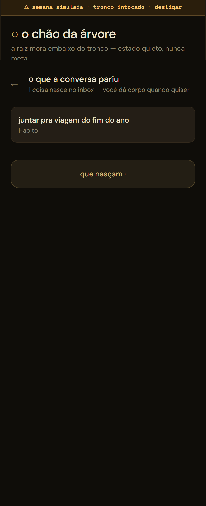
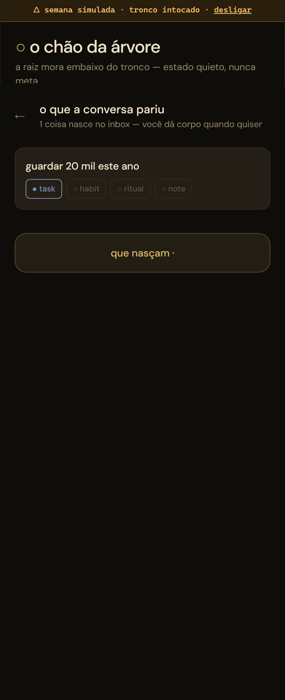
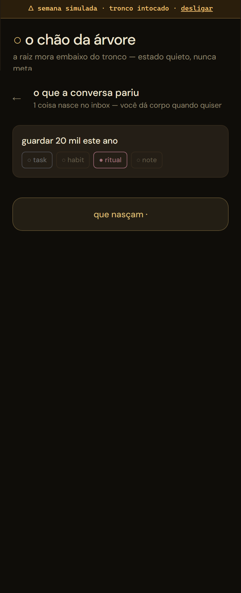
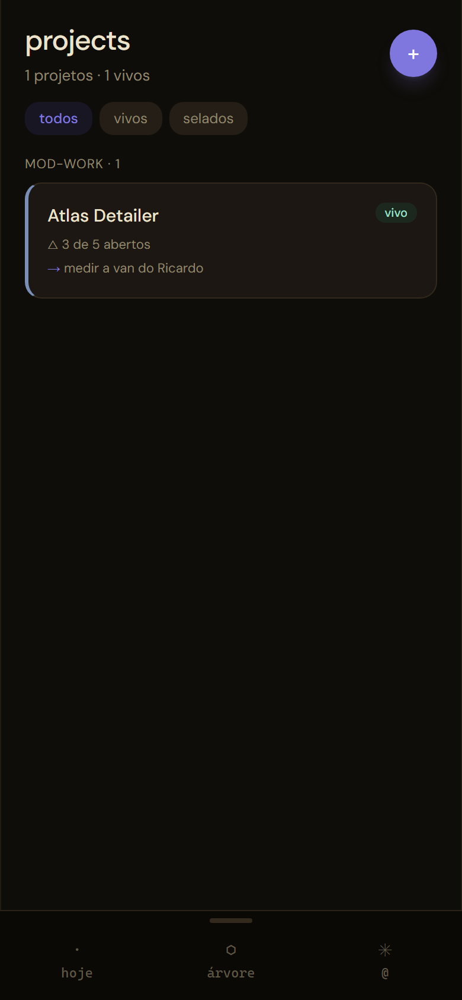
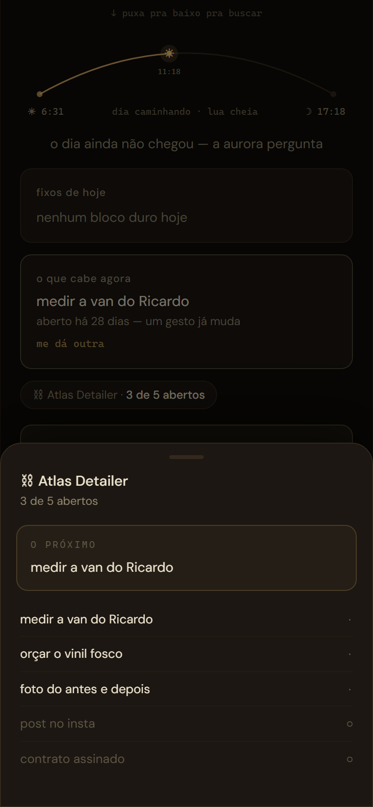
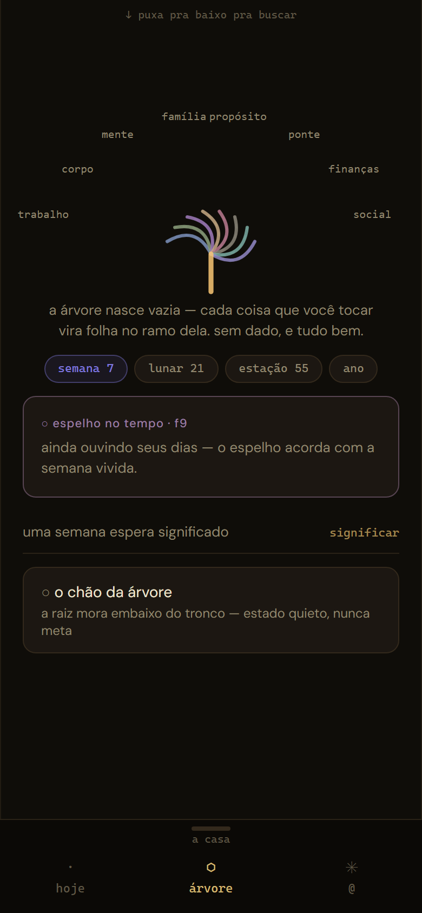
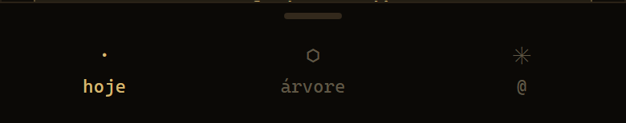
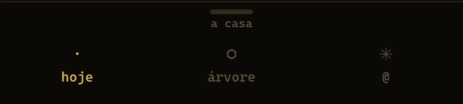
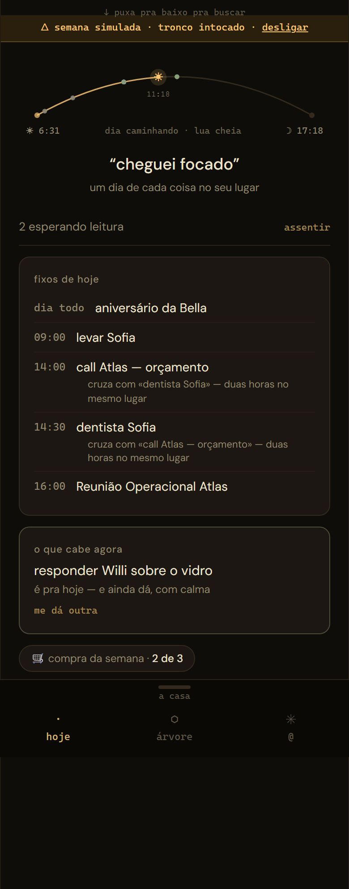

atom · onda 3 · sessão da cirurgia fina
30 Jul 2026, dia. Nada de exame novo — o diagnóstico estava
feito, faltava bisturi. As cinco obras da fila fecharam, de dentro pra
fora, e as duas condições que seguravam o gatilho do gate caíram.
Sete commits em v2-faces, 404 testes verdes, 15 cenas de
prova, nada subiu: deploy, push, merge e o gatilho continuam sendo gesto
do Rick.
| Obra | Estado |
|---|---|
| 1 · o parto honesto do builder (MANCA 1–4) | ✓ cfb918a · mapa explícito + persist + chip D69 |
| 2 · a sheet do projeto (DP-E/DP-I) | ✓ f343777 · condição 1 do gate cumprida |
| 3 · a porta da escada na ÁRVORE (DP-G) | ✓ f6d2852 · condição 2 resolvida |
| 4 · as portas invisíveis ganham corpo | ✓ 3e688a5 · rótulo «a casa» + hint da busca |
| 5 · miúdos de lei (D68 · D63 · who: · D60) | ✓ c82153c · um commit, cinco leis |
| Hooks | ✓ 404 testes (12 novos) · tsc · build · atos 15 cenas · visual 13/13 |
| O gate (D41) | gatilho livre as duas condições do §2 cumpridas — puxar é do Rick |
O inferType testava substrings que nunca batiam —
a meta financeira nascia «Habito» e os braços task/ritual eram código morto.
Agora o mapper tem mapa explícito questionId → papel (coisa / contexto
/ elo), o store persiste (reload não apaga a entrevista), e o card do
mini-wrap ganhou o chip de troca de tipo — a heurística nunca decide quieta
(D69). O que se troca no chip é o que nasce, provado pelo POST na cena.



A pill do HOJE desaguava na casca velha. Agora abre a
ProjectSheet (molde AssentimentoSheet): a presença
pela mesma linha do engine, os filhos com ·/○,
o próximo como convite, «quieto há Nd» — e nada além (DP-I: criar projeto,
filtros e agrupamento eram chrome de gerenciador). /projects
ficou intocada: morre no gate, não antes.


·/○ — e o toque leva ao ItemDetail.A escada F4 (/review) era a única função do mundo
velho sem porta nova. A recomendação do gate §3 foi aplicada como
default declarado (DP-G, reversível): quando um período espera
síntese, um puxador quieto no pé da ÁRVORE — «uma semana espera
significado» · significar — leva ao rito. Sem número, sem badge (D46);
some quando não há. Com isso, /review saiu das condições do
gate: a rota sobrevive ao merge fora da nav, e a reforma da tela é de outra
onda.

A mesma família de pecado, dois consertos: o puxador da casa deixou de ser uma barra muda de 36×4px (dado real de 29 Jul: o Rick não a achou) e o pull-down da busca ganhou affordance de primeira vez — um hint que aparece uma única vez e morre pra sempre (localStorage). Sem tutorial, sem tooltip perpétuo, sem virar aba (D54 de pé).



disconnect() apagava o refresh token que o «desfazer tudo»
precisaria. Agora: ida viva → desfaz a estrutura primeiro; se o
desfazer falhar, o desligar inteiro recusa — com a fala certa
(«não consegui desligar agora — o conector segue como estava»).
3 testes provam a ordem · a fala do toast diz a verdade (desfez ou não)
O grid da Raiz lia updated_at — que mente a cada retag —
dez pixels abaixo do card que lia evento significativo. Agora o grid lê a
mesma lei do cofre (absences); e o healthPct
morto saiu do hook (o % morreu na D50).
um retag em massa não silencia mais o grid
who: virou prefixo de primeira classe: filtra pelos
#who:* do tronco (não por texto), aceita quem:,
e a tela vazia ensina com os valores que existem.
4 testes novos · benchmark 16 (pol. 7 da dissecação 04)
Os toasts do conector saíram da era do erro cru («Erro ao desconectar») pra voz da casa; e o «Item capturado» silencia durante a cerimônia do selo do wrap — toast por cima de rito quebrava o rito.
captura quiet no handleCommit · nenhum erro cru vaza pra tela
Raiz, Builder e Aurora falam «você» com acento («saúde», «finanças», «Você faz exercício físico?»; o «ninguém lê além de ti» virou «além de você»). E os nomes da taxonomy projetada lá fora ficaram congelados em ASCII num mapa próprio: o tom da UI nunca renomeia label no Gmail — um teste guarda isso.
se o Rick quiser «Atom/saúde» com acento, é a DP-J — decisão de contrato externo (D68), não de tom
/review saiu das condições, checklist §4 anotado).
O gatilho está livre — e continua sendo teu (D41): esta sessão o
destravou, nunca o puxa.daily-digest — a MENTE do cron corrigida ontem só vale em produção com o deploy.#seed · polimentos da ÁRVORE · extractWhoTag com acento.